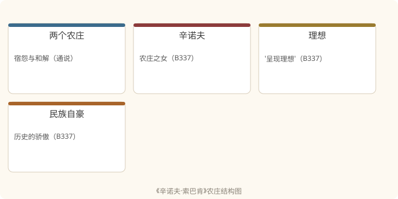

辛诺夫·索巴肯
一、基本信息
| 作者 | 比奥恩斯彻讷·比昂松 |
|---|---|
| 成书/出版 | 1857年（Britannica B337：Synnøve Solbakken (1857)——农庄故事） Bjornstjerne Bjornson — Encyclopaedia Britannica（百科全书） |
| 国别/地区 | 挪威 |
| 时代 | 近代 · 19世纪50年代 |
| 体裁 | 中篇小说 |
| 语言 | 挪威语 |

《辛诺夫·索巴肯》农庄结构图（主题·结构图）
二、创作背景
Britannica（B337）：Synnøve Solbakken (1857)——农庄故事（peasant tale）；英译名 Trust and Trial、Love and Life in Norway、Sunny Hill。
Britannica（B337）：比昂松'sought to stimulate national pride in Norway's history and achievements and to present ideals'。
Britannica（B337）：'saga material was turned into plays, contemporary material into novels or peasant tales'——'轮作式'写作。
三、内容脉络
两个农庄之间的青年男女：家族宿怨与田园理想（情节通说待核——B337未载细节）。
和解与婚礼：挪威农庄的道德理想（通说待核）。
四、主要人物表
| 人物 | 身份 | 说明 |
|---|---|---|
| 托尔（Thorbjörn说） | 农庄青年 | （通说待核，B337未载人名） |
| 辛诺夫 | Solbakken农庄之女 | （书名人物，B337） |
五、主题与艺术特点
- 农庄故事与民族浪漫主义（B337：peasant tales；national pride）。
- ideals 的文学呈现（B337：to present ideals）。
- 宿怨与和解的乡土伦理（通说待核）。
六、影响与评论
- Britannica：与《快乐的男孩》(1860)等构成农庄故事序列（B337 作品列表）。
Bjornstjerne Bjornson — Encyclopaedia Britannica（百科全书） - Britannica：比昂松为挪威'四大家'之一（B337）。
Bjornstjerne Bjornson — Encyclopaedia Britannica（百科全书）
七、阅读建议
难点
- 挪威乡土社会与路德宗背景（通说待核）。
- '农庄故事'类型传统（通说待核）。
- 中译名待核（《辛诺夫·索巴肯》）。
- 挪威文原版。
比昂松入门；与《快乐的男孩》对读。
八、待核实
- 青年男主人名（Thorbjörn说）核对（B337未载）。
- 中译名待核。
- 1857年出版细节待核。